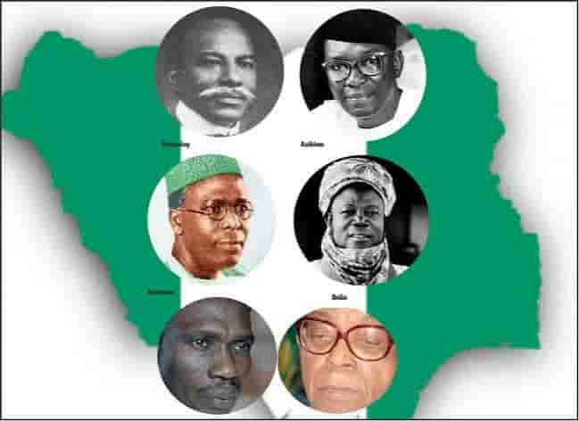

Explore • Experience • Discover
Discover the beauty of Nigeria
From vibrant cities and beautiful landscapes to unforgettable food and rich traditions, Nigeria is a country full of stories.
Welcome to Nigeria
A country of unforgettable experiences
Nigeria is one of Africa's most diverse countries, offering visitors a mixture of modern cities, natural attractions, cultural traditions, and delicious food.
Discover Nigeria highlights some of the destinations and experiences that can help you appreciate the country's diversity.
Start exploring →Nigeria is home to hundreds of ethnic groups and languages, each contributing to its unique identity.
Places to Explore
Featured Destinations
Discover some of the places that make Nigeria special.
Taste Nigeria
Food that tells a story
Nigerian food is colorful, flavorful, and deeply connected to family, community, and tradition.
Explore Nigerian Food


Your Adventure Starts Here
Where will Nigeria take you?
Choose a destination, explore the culture, and create your own simple travel plan.
Plan Your Visit